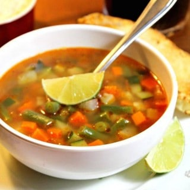
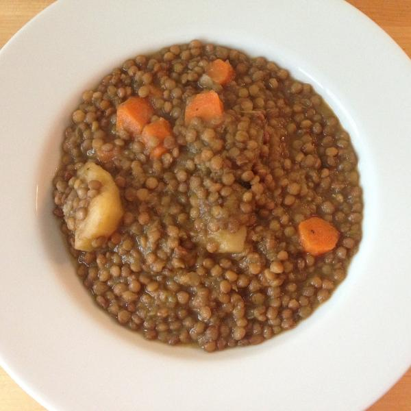
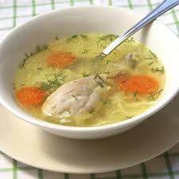

Libro de Recetas
Contenido:
- Sopa de Verduras
- Lentejas
- Caldo de Pollo
| Receta |
Costo |
| Sopa |
200 Pesos |
| Lentejas |
100 Pesos |
| Caldo de Pollo |
250 Pesos |
Receta #1
- Tiempo: 30 minutos
- Serves: 2 Platos
Receta 1 : Sopa de Verduras
Sopa

Ingredientes:
- 1 tomate grande picado
- ¼ de taza de cebolla blanca picada
- 1 diente de ajo grande picado
- ¾ taza de zanahorias cortadas en cubitos
- 1 cucharada de aceite vegetal
- ¾ taza de calabacín cortado en cubitos
- ¾ taza de habas verdes picadas
- 1 taza de papa en cubos
- 4 tazas de caldo de pollo o caldo de verduras
- 1 ramita de perejil
- Sal y pimienta al gusto
Elaboracion : Sopa de Verduras
- Coloca el tomate picado, la cebolla y el ajo en tu licuadora y procesa hasta que tengas una salsa suave
- Calienta el aceite en una olla mediana a fuego medio. Agrega la salsa de tomate y las zanahorias, cocina por 5 minutos.
- Después de los 5 minutos, agrega las papas en cubos, el calabacín cortado en cuadritos, las habas verdes picadas, y el caldo de pollo. Gire el fuego a medio alto y cocine durante unos 6 minutos o hasta que comience a hervir. Una vez que comience a hervir, reduzca el fuego a bajo, agrega la rama del perejil y cubra. Cocine durante 8 a 10 minutos hasta que todas las verduras estén cocidas. Sazone con sal y pimienta al gusto. Sirva caliente en cuencos con algunas tortillas calientes o un pedazo de pan.
Receta #2
Lentejas

- Tiempo: 15 minutos
- Serves: 3 Platos
Ingredientes:
- 1 Cebolla
- 1 Apio
- 2 Zanahorias
- 50 g Aceite
- 200 g Lenteja pardina
- 400 ml Agua
- 4 c/s Tomate triturado
- 1 pizca Sal
- 1 Pastilla de caldo
Preparacion:
- Sofreír la cebolla el apio y la zanahoria y trituramos con el turbo
- Añadimos las lentejas precedentemente puestas en remojo ( con que las pongáis en remojo la mañana temprano por la misma noche cocinarlas ya está bien) el agua, la pastilla de caldo, el tomate triturado, la sal y pimienta negra.
Receta #3
Caldo De Pollo

- Tiempo: 60 minutos
- Serves: 4 Platos
Ingredientes:
- Un pollo
- 1 cebolla
- 1 pimiento verde y/o rojo
- 1 o 2 zanahorias
- Especias al gusto
- Sal
- Vino blanco
Preparacion:
- Echamos todos los ingredientes en una olla u otro recipiente grande y llenamos de agua, hasta que los cubra dos o tres dedos por encima.
- Con los ingredientes ya dentro y cubiertos de agua, lo ponemos todo a calentar. Es importante empezar con el agua fría (temperatura ambiente) ya que así conseguiremos que nuestros ingredientes suelten más jugo que si los metiésemos en agua ya en ebullición . El motivo técnico de que esto sea así es que, si metemos los huesos en agua ya hirviendo, las proteínas de los huesos del pollo se coagulan y evitan que éstos suelten todo su jugo .
- Cuando comience a hervir el agua, bajamos el fuego y con una cuchara o cucharón, vamos eliminando la espuma que vaya saliendo de la superficie. Al principio, cuando el agua se caliente ,saldrá mucha.Ésto,son las impurezas.
- Cuando no salga más espuma, lo tapamos y lo dejamos hervir a fuego suave durante ,de una hora y media a tres horas, dependiendo de lo concentrado que queramos el caldo. Si lo hacemos en olla exprés, lo cual no recomiendo si eres principiante, con tenerlo de media a una hora a fuego suave será suficiente.
- Colamos el caldo y lo reservamos ya sin ingredientes sólidos. Lo metemos en el frigorífico durante una noche entera. Al día siguiente, habrá salido una especie de gelatina en la superficie. Esto es la grasa . Recomiendo eliminarla con una cuchara .